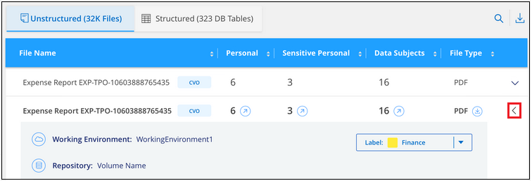
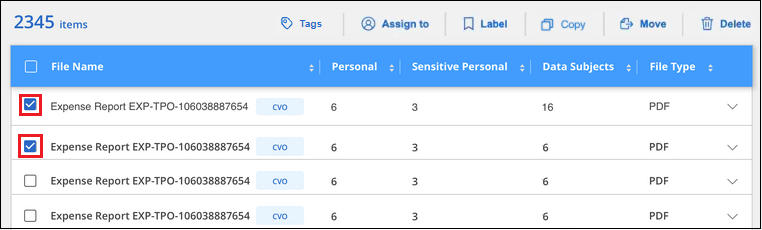

ドキュメントの変更をリクエスト
ドキュメントの変更をリクエスト GitHub で編集
GitHub で編集 寄稿者向けガイド
寄稿者向けガイドプライベートデータを整理する
Cloud Data Sense は、プライベートデータを管理、整理するためのさまざまな方法を提供します。これにより、最も重要なデータを簡単に確認できます。
-
に登録している場合は "Azure 情報保護（ AIP ）" ファイルを分類して保護するには、 Cloud Data Sense を使用して AIP ラベルを管理します。
-
組織または特定の種類のフォローアップのためにマークするファイルにタグを追加できます。
-
Cloud Manager ユーザを特定のファイルまたは複数のファイルに割り当てて、ユーザがファイルの管理を担当できるようにすることができます。
-
「ポリシー」機能を使用すると、 1 つのボタンをクリックして簡単に結果を表示できるように、独自のカスタム検索クエリを作成できます。
-
特定の重要なポリシーが結果を返すと、 Cloud Manager ユーザに E メールアラートを送信できます。

|
このセクションで説明する機能は、データソースに対して完全な分類スキャンを実行することを選択した場合にのみ使用できます。マッピングのみのスキャンを実行したデータソースでは、ファイルレベルの詳細は表示されません。 |
タグまたはラベルを使用する必要がありますか？
以下は、データセンスタグと Azure Information Protection ラベルの比較です。
| タグ | ラベル |
|---|---|
ファイルタグは、データセンスの統合部分です。 |
Azure Information Protection （ AIP ）に加入している必要があります。 |
タグはデータセンスデータベースにのみ保存され、ファイルには書き込まれません。ファイル、アクセス日時または変更日時は変更されません。 |
ラベルはファイルの一部であり、ラベルが変更されるとファイルが変更されます。この変更によって、アクセス日時や変更日時も変更されます。 |
1 つのファイルに複数のタグを設定できます。 |
1 つのファイルに 1 つのラベルを付けることができます。 |
タグは、コピー、移動、削除、ポリシーの実行など、内部データセンスアクションに使用できます。 など |
ファイルを読み取ることができる他のシステムでは、ラベルを確認できます。このラベルは、自動化のために使用できます。 |
ファイルにタグが設定されているかどうかを確認するために使用される API 呼び出しは 1 つだけです。 |
AIP ラベルを使用してデータを分類する
加入している場合、 Cloud Data Sense がスキャンしているファイルで AIP ラベルを管理できます "Azure 情報保護（ AIP ）"。AIP を使用すると、コンテンツにラベルを適用することで、ドキュメントやファイルを分類して保護できます。データセンスを使用すると、既にファイルに割り当てられているラベルを表示したり、ファイルにラベルを追加したり、ラベルが既に存在する場合にラベルを変更したりできます。
クラウドデータセンスは、 .DOC 、 .DOCX 、 .pdf 、 .PPTX 、 .XLS 、 .xlsx 。
|
|
|
ワークスペースへの AIP ラベルの統合
AIP ラベルを管理するには、既存の Azure アカウントにサインインして AIP ラベル機能をクラウドデータセンスに統合する必要があります。有効にすると、すべてのファイルの AIP ラベルを管理できます "作業環境とデータソース" をクリックします。
-
アカウントと Azure Information Protection のライセンスが必要です。
-
Azure アカウントのログインクレデンシャルが必要です。
-
Amazon S3 バケット内のファイルのラベルを変更する場合は、権限「 3 ： PutObject 」が IAM ロールに含まれていることを確認します。を参照してください "IAM ロールを設定します"。
-
Cloud Data Sense Configuration ページで、 Integrate AIP Labels をクリックします。

-
[Integrate AIP Labels （ AIP ラベルの統合） ] ダイアログで、 [* Sign in to Azure* （ Azure にサインイン） ]
-
表示される Microsoft ページで、アカウントを選択し、必要なクレデンシャルを入力します。
-
Cloud Data Sense タブに戻り、「 AIP Labels were successfully integrated with the account <account_name> 」というメッセージが表示されます。
-
[* 閉じる ] をクリックすると、ページの上部に「 AIP ラベル integrated_ 」というテキストが表示されます。

AIP ラベルは、 ［ 調査 ］ ページの結果ペインで表示および割り当てることができます。また、ポリシーを使用して AIP ラベルをファイルに割り当てることもできます。
ファイルで AIP ラベルを表示する
ファイルに割り当てられている現在の AIP ラベルを表示できます。
[ データ調査結果 ] ペインで、をクリックします  をクリックします。
をクリックします。

AIP ラベルを手動で割り当てる
Cloud Data Sense を使用して、ファイルに AIP ラベルを追加、変更、および削除できます。
AIP ラベルを 1 つのファイルに割り当てる手順は、次のとおりです。
-
[ データ調査結果 ] ペインで、をクリックします
 をクリックします。
をクリックします。 ページのファイルのメタデータの詳細を示すスクリーンショット。"]
ページのファイルのメタデータの詳細を示すスクリーンショット。"] -
[* このファイルにラベルを割り当て * ] をクリックして、ラベルを選択します。
ラベルがファイルメタデータに表示されます。
AIP ラベルを複数のファイルに割り当てるには、次の手順を実行します。
-
[ データ調査結果 ] ペインで、ラベル付けするファイルを選択します。
 ページの [ ラベル ] ボタン。"]
-
個々のファイルを選択するには、各ファイル（
 ）。
）。 -
現在のページのすべてのファイルを選択するには、タイトル行（
 ）。
）。
-
-
ボタンバーの * Label * をクリックし、 AIP ラベルを選択します。

AIP ラベルが、選択したすべてのファイルのメタデータに追加されます。
ポリシーを使用して AIP ラベルを自動的に割り当てます
AIP ラベルは、ポリシーの条件を満たすすべてのファイルに割り当てることができます。ポリシーの作成時に AIP ラベルを指定することも、ポリシーの編集時にラベルを追加することもできます。
Cloud Data Sense がファイルをスキャンすると、ファイルにラベルが追加または更新されます。
ラベルがすでにファイルに適用されているかどうか、およびラベルの分類レベルによって、ラベルを変更するときに次のアクションが実行されます。
| ファイルの内容 | 作業 |
|---|---|
にはラベルがありません |
ラベルが追加されます |
下位レベルの分類の既存のラベルがあります |
上位レベルのラベルが追加されます |
より高いレベルの分類の既存のラベルがあります |
上位レベルのラベルが保持されます |
手動とポリシーの両方でラベルが割り当てられます |
上位レベルのラベルが追加されます |
2 つのポリシーによって 2 つの異なるラベルが割り当てられます |
上位レベルのラベルが追加されます |
AIP ラベルを既存のポリシーに追加する手順は、次のとおりです。
-
[ ポリシーリスト ] ページで、 AIP ラベルを追加（または変更）するポリシーの Edit をクリックします。

-
[ ポリシーの編集 ] ページで、 [ ポリシー ] パラメータに一致するファイルの自動ラベルを有効にするチェックボックスをオンにして、ラベル（ General など）を選択します。

-
[ ポリシーの保存 *] をクリックすると、 [ ポリシー概要 ] にラベルが表示されます。
|
|
ポリシーにラベルが設定されていても、ラベルが AIP から削除されている場合、ラベル名はオフになり、ラベルは割り当てられなくなります。 |
AIP 連動の削除
ファイル内の AIP ラベルを管理する機能が不要になった場合は、クラウドデータセンスインターフェイスから AIP アカウントを削除できます。
データセンスを使用して追加したラベルは変更されません。ファイルに存在するラベルは、現在存在しているラベルのままになります。
-
_Configuration_page で、 *AIP ラベル統合 > 統合の削除 * をクリックします。

-
確認ダイアログで、 [ 統合の削除（ Remove Integration ） ] をクリックします。
タグを適用してスキャンしたファイルを管理します
特定の種類のフォローアップでマークするファイルにタグを追加できます。たとえば、重複するファイルがいくつか見つかった場合に、それらのファイルを 1 つ削除する必要がありますが、削除するファイルを確認する必要があります。このファイルに「削除するチェック」というタグを追加すると、このファイルに何らかの調査と将来のアクションが必要であることがわかります。
データセンスを使用すると、ファイルに割り当てられているタグを表示したり、ファイルのタグを追加または削除したり、名前を変更したり、既存のタグを削除したりできます。
AIP ラベルがファイルメタデータの一部であるのと同じ方法で、タグがファイルに追加されないことに注意してください。このタグは、 Cloud Manager ユーザが Cloud Data Sense を使用して確認するだけで表示されるので、ファイルを削除する必要があるか、特定の種類のフォローアップを確認する必要があるかを確認できます。

|
Cloud Data Sense でファイルに割り当てられているタグは、ボリュームや仮想マシンのインスタンスなど、リソースに追加できるタグには関連していません。データセンスタグは、ファイルレベルで適用されます。 |
特定のタグが適用されているファイルを表示しています
特定のタグが割り当てられているすべてのファイルを表示できます。
-
Cloud Data Sense の [* Investigation* （調査 * ） ] タブをクリックします。
-
[ データ調査 ] ページで、 [ フィルタ ] ペインの [* タグ ] をクリックし、必要なタグを選択します。
 ペインからタグを選択する方法を示すスクリーンショット。"]
ペインからタグを選択する方法を示すスクリーンショット。"][ 調査結果 ] ペインには、これらのタグが割り当てられているすべてのファイルが表示されます。
ファイルにタグを割り当てます
タグは、単一のファイルまたはファイルのグループに追加できます。
タグを 1 つのファイルに追加するには：
-
[ データ調査結果 ] ペインで、をクリックします
をクリックします。 -
[* タグ * （ * Tags * ） ] フィールドをクリックすると、現在割り当てられているタグが表示されます。
-
タグを追加します。
-
既存のタグを割り当てるには、「 * 新しいタグ … 」フィールドをクリックして、タグの名前を入力します。探しているタグが表示されたら、そのタグを選択して * Enter * を押します。
-
新しいタグを作成してファイルに割り当てるには、 [ 新しいタグ …] * フィールドをクリックし、新しいタグの名前を入力して、 Enter キーを押します。
 ページでファイルにタグを割り当てる方法を示すスクリーンショット。"]
ページでファイルにタグを割り当てる方法を示すスクリーンショット。"]
タグがファイルメタデータに表示されます。
-
複数のファイルにタグを追加するには：
-
[ データ調査結果 ] ペインで、タグを付けるファイルを選択します。
ページから、タグを付けるファイルの選択方法と [ タグ ] ボタンを示すスクリーンショット。"]
-
個々のファイルを選択するには、各ファイル（
）。 -
現在のページのすべてのファイルを選択するには、タイトル行（
）。
-
-
ボタンバーで * タグ * をクリックすると、現在割り当てられているタグが表示されます。
-
タグを追加します。
-
既存のタグを割り当てるには、「 * 新しいタグ … 」フィールドをクリックして、タグの名前を入力します。探しているタグが表示されたら、そのタグを選択して * Enter * を押します。
-
新しいタグを作成してファイルに割り当てるには、 [ 新しいタグ …] * フィールドをクリックし、新しいタグの名前を入力して、 Enter キーを押します。
 ページで複数のファイルにタグを割り当てる方法を示すスクリーンショット。"]
ページで複数のファイルにタグを割り当てる方法を示すスクリーンショット。"]
-
-
確認ダイアログでタグの追加を承認し、選択したすべてのファイルのメタデータにタグを追加します。
ファイルからタグを削除しています
不要になったタグは削除できます。
既存のタグの * x * をクリックするだけです。

複数のファイルを選択した場合、タグはすべてのファイルから削除されます。
特定のファイルを管理するためのユーザの割り当て
Cloud Manager ユーザには特定のファイルまたは複数のファイルを割り当てることができます。これにより、ファイルに対して実行する必要があるフォローアップアクションをユーザが実行できるようになります。この機能は、多くの場合、カスタムステータスタグをファイルに追加する機能で使用されます。
たとえば、特定の個人データを含むファイルで、読み取りおよび書き込みアクセス（オープン権限）を大量に許可する場合などです。したがって、 Status タグ「 Change permissions 」を割り当て、このファイルをユーザー「 Joan Smith 」に割り当てて、問題の修正方法を決定することができます。問題を修正すると、 Status タグが「 Completed 」に変更されることがあります。
ユーザ名はファイルメタデータの一部としてファイルに追加されません。 Cloud Data Sense を使用している場合、 Cloud Manager ユーザから確認できます。
[ 調査 ] ページの新しいフィルタを使用すると、 [ 割り当て先 ] フィールドに同じユーザーを持つすべてのファイルを簡単に表示できます。
ユーザーを 1 つのファイルに割り当てるには、次の手順を実行します。
-
[ データ調査結果 ] ペインで、をクリックします
をクリックします。 -
[Assigned To] フィールドをクリックして、ユーザ名を選択します。
 ページでファイルにユーザーを割り当てる方法を示すスクリーンショット。"]
ページでファイルにユーザーを割り当てる方法を示すスクリーンショット。"]ユーザ名がファイルメタデータに表示されます。
ユーザーを複数のファイルに割り当てるには：
-
[ データ調査結果 ] ペインで、ユーザーに割り当てるファイルを選択します。
ページから、ユーザーに割り当てるファイルの選択方法と [ 割り当て先 ] ボタンを示すスクリーンショット。"]
-
個々のファイルを選択するには、各ファイル（
）。 -
現在のページのすべてのファイルを選択するには、タイトル行（
）。
-
-
ボタンバーで * Assign to * をクリックし、ユーザー名を選択します。
 ページでユーザーを複数のファイルに割り当てる方法を示すスクリーンショット。"]
ページでユーザーを複数のファイルに割り当てる方法を示すスクリーンショット。"]選択したすべてのファイルのメタデータにユーザが追加されます。
ポリシーを使用したデータの制御
ポリシーは、よく要求されるコンプライアンスクエリーの [ 調査 ] ページで検索結果を表示するカスタムフィルタのお気に入りリストのようなものです。Cloud Data Sense は、お客様からの一般的なリクエストに基づいて、一連の事前定義されたポリシーを提供します。組織固有の検索結果を提供するカスタムポリシーを作成できます。
ポリシーには次の機能があります。
-
事前定義されたポリシー ユーザの要求に基づいて作成されます
-
独自のカスタムポリシーを作成できます
-
ポリシーの結果を含む [ 調査 ] ページを起動します ワンクリックで
-
Cloud Manager ユーザに特定の重大度の E メールアラートを送信する ポリシーによって結果が返されるので、通知を取得して保護することができます データを
-
AIP の割り当て（ Azure 情報保護） 定義された条件に一致するすべてのファイルに自動的にラベルを付けます ポリシー内
-
特定のポリシーで結果が返されたときにファイルを自動的に削除して（ 1 日に 1 回）、データを自動的に保護できます
順守ダッシュボードの * ポリシー * タブには、クラウドデータセンスのこのインスタンスで使用可能なすべての定義済みおよびカスタムポリシーが一覧表示されます。

さらに、 [ 調査 ] ページの [ フィルタ ] リストにポリシーが表示されます。
[ 調査 ] ページでポリシーの結果を表示します
[ 調査 ] ページでポリシーの結果を表示するには、をクリックします  ボタン"] ボタンをクリックして特定のポリシーを選択し、 * 調査結果 * を選択します。
ボタン"] ボタンをクリックして特定のポリシーを選択し、 * 調査結果 * を選択します。

カスタムポリシーを作成しています
組織固有の検索結果を提供する独自のカスタムポリシーを作成できます。
-
[ データ調査 ] ページで、使用するすべてのフィルタを選択して検索を定義します。を参照してください "[ データ調査 ページでデータをフィルタリングします"^] を参照してください。
-
必要な方法でフィルタ特性をすべて設定したら、 [ この検索からポリシーを作成する *] をクリックします。

-
ポリシーに名前を付け、そのポリシーで実行できるその他のアクションを選択します。
-
一意の名前と説明を入力します。
-
必要に応じて、このチェックボックスをオンにすると、ポリシーのパラメータに一致するファイルが自動的に削除されます。の詳細を確認してください "ポリシーを使用してソースファイルを削除しています"。
-
必要に応じて、 Cloud Manager ユーザに通知 E メールを送信する場合はチェックボックスをオンにし、 E メールの送信間隔を選択します。の詳細を確認してください "ポリシーの結果に基づいて E メールアラートを送信する"。
-
必要に応じて、このチェックボックスをオンにすると、ポリシーパラメータに一致するファイルに AIP ラベルが自動的に割り当てられ、ラベルが選択されます。（ AIP ラベルがすでに統合されている場合のみ。の詳細を確認してください "AIP ラベル". ）
-
[ ポリシーの作成 *] をクリックします。

-
[ ポリシー ] タブに新しいポリシーが表示されます。
準拠していないデータが見つかった場合に E メールアラートを送信する
Cloud Data Sense は、特定の重要なポリシーの結果が返されたときに Cloud Manager ユーザに E メールアラートを送信して、データを保護する通知を受け取ることができます。E メール通知は、日単位、週単位、または月単位で送信することができます。
この設定は、ポリシーの作成時または任意のポリシーの編集時に設定できます。
既存のポリシーにメールの更新を追加するには、次の手順を実行します。
-
[ ポリシーリスト ] ページで、電子メール設定を追加（または変更）するポリシーの [ 編集 *] をクリックします。

-
ポリシーの編集ページで、 Cloud Manager ユーザに通知 E メールを送信する場合はチェックボックスをオンにし、 E メールの送信間隔（毎週 * Week * など）を選択します。

-
［ * ポリシーの保存 * ］ をクリックすると、電子メールの送信間隔が ［ ポリシー概要 ］ に表示されます。
最初の電子メールは、ポリシーからの結果がある場合に送信されます。ただし、ポリシーの条件を満たすファイルがある場合に限ります。通知メールに個人情報は送信されません。E メールには、ポリシーの条件に一致するファイルがあり、ポリシーの結果へのリンクが記載されています。
ポリシーの編集
前の手順で作成した既存のポリシーの条件を変更できます。これは、特定のパラメータを追加または削除するためにクエリ（フィルタを使用して定義した項目）を変更する場合に特に便利です。
定義済みポリシーでは、電子メール通知が送信されるかどうか、およびAIPラベルが追加されるかどうかだけを変更できます。その他の値は変更できません。
-
[ポリシーリスト]ページで、変更するポリシーの*Edit*をクリックします。

-
このページの項目（名前、概要 、電子メール通知が送信されているかどうか、およびAIPラベルが追加されているかどうか）を変更する場合は、変更を行って*ポリシーの保存*をクリックします。
保存されたクエリのフィルタを変更する場合は、[クエリの編集]をクリックします。
 ページの[クエリの編集]ボタンを選択するスクリーンショット。"]
ページの[クエリの編集]ボタンを選択するスクリーンショット。"] -
そのクエリーを定義する[調査]ページで、フィルタを追加、削除、またはカスタマイズしてクエリーを編集し、[変更の保存*]をクリックします。

ポリシーはただちに変更されます。そのポリシーに定義されたアクションは、電子メールの送信、AIPラベルの追加、またはファイルの削除のいずれかが、次の内部で実行されます。
ポリシーの削除
作成したカスタムポリシーが不要になった場合は削除できます。事前定義されたポリシーは削除できません。
ポリシーを削除するには、をクリックします ボタン"] ボタンをクリックして特定のポリシーを削除し、確認ダイアログでもう一度 ［ * ポリシーの削除 * ］ をクリックします。
事前定義されたポリシーのリスト
Cloud Data Sense で提供されるシステム定義のポリシーは次のとおりです。
| 名前 | 説明 | ロジック |
|---|---|---|
S3 公開プライベートデータ |
個人または機密性の高い個人情報を含む S3 オブジェクト。オープンなパブリック読み取りアクセスが許可されます。 |
S3 Public となり、個人情報または機密情報が含まれます |
PCI DSS ： 30 日以上の古いデータ |
クレジットカード情報を含むファイル。最終更新日は 30 日前です。 |
クレジットカードと最終変更日が 30 日以上含まれます |
HIPAA ： 30 日以上のデータを停滞させます |
ヘルス情報が含まれるファイル。最終更新日は 30 日前です。 |
健康データを含む（ HIPAA レポートと同様に定義されている） そして、最終変更日は 30 日です |
プライベートデータ– 7 年以上前から停滞しています |
個人情報または機密性の高い個人情報を含むファイル。最終更新日は 7 年前に変更されました。 |
個人情報または機密性の高い個人情報を含むファイル。最終更新日は 7 年前に変更されました |
GDPR –欧州市民 |
EU 加盟国の市民の 5 つ以上の ID を含むファイル、または EU 加盟国の市民の ID を含む DB テーブル。 |
（ 1 つの） EU 市民または DB テーブルの 5 つ以上の識別子を含むファイル。列の 15% 以上の行と、 1 つの国の EU 識別子が含まれています。（欧州諸国のいずれかの国の識別子。ブラジル、カリフォルニア、米国 SSN 、イスラエル、南アフリカを含まない） |
CCPA –カリフォルニア州在住 |
この識別子を持つ 10 を超えるカリフォルニアドライバのライセンス ID または DB テーブルを含むファイル。 |
10 を超える California Driver のライセンス ID または DB を含むファイル カリフォルニアドライバのライセンスを含むテーブル |
データ主体名–高リスク |
50 を超えるデータ主体名を持つファイル。 |
50 を超えるデータ主体名を持つファイル |
E メールアドレス–リスクが高くなります |
E メールアドレスが 50 を超えるファイル、または E メールアドレスを含む行の 50% を超える DB 列 |
E メールアドレスが 50 を超えるファイル、または E メールアドレスを含む行の 50% を超える DB 列 |
個人データ–高いリスク |
個人データ識別子が 20 個を超えるファイル、または個人データ識別子を含む行の 50% を超える DB 列。 |
20 以上の個人用のファイル、または個人を含む行の 50% を超える DB 列を持つファイル |
機密性の高い個人データ–高いリスク |
機密性の高い個人データ識別子が 20 を超えるファイル、または機密性の高い個人データを含む行の 50% を超える DB 列。 |
機密性の高い個人用のファイル、または機密性の高い個人を含む行の 50% 以上を含む DB 列 |